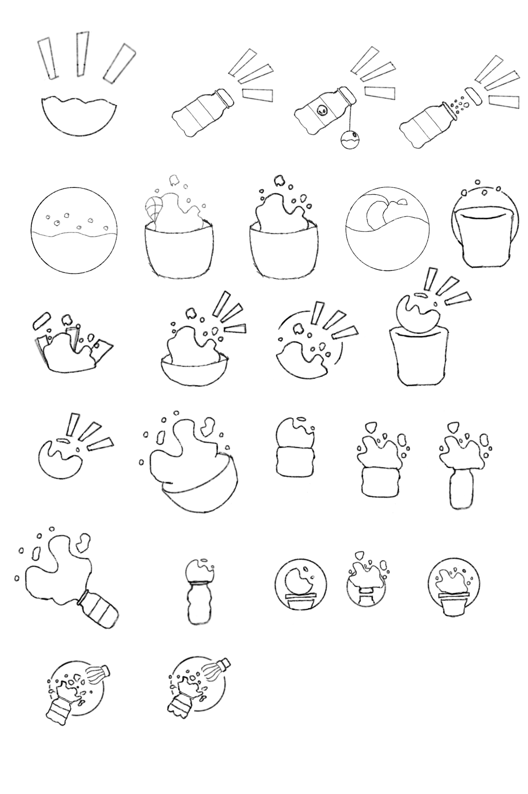
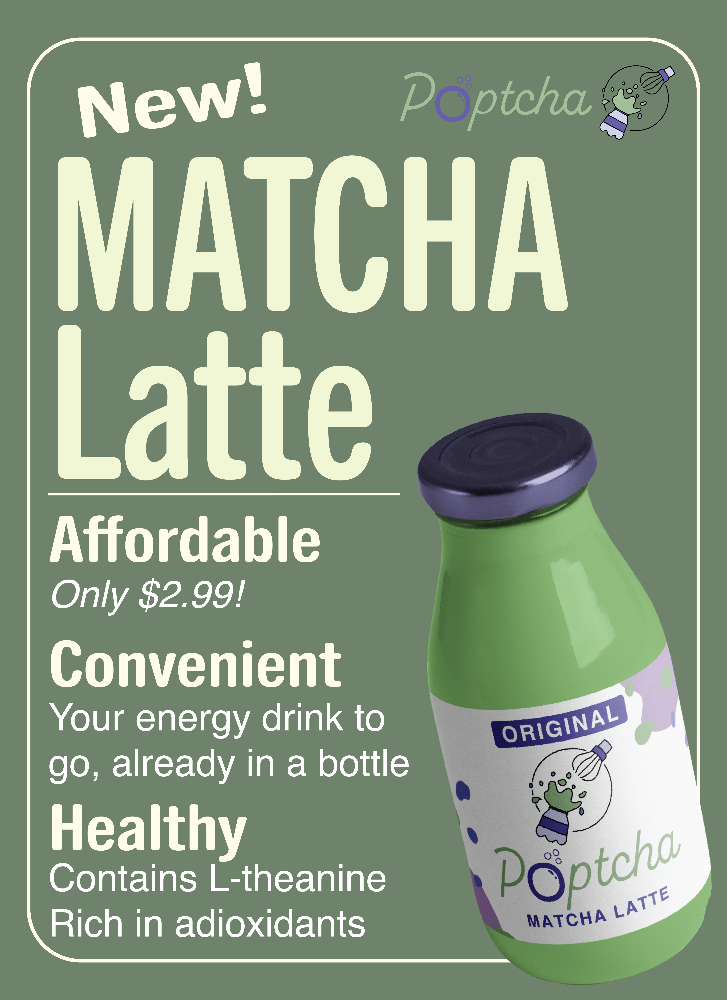
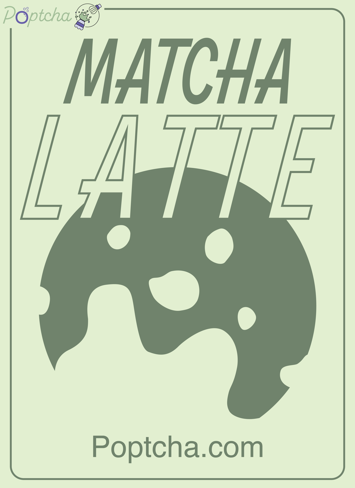
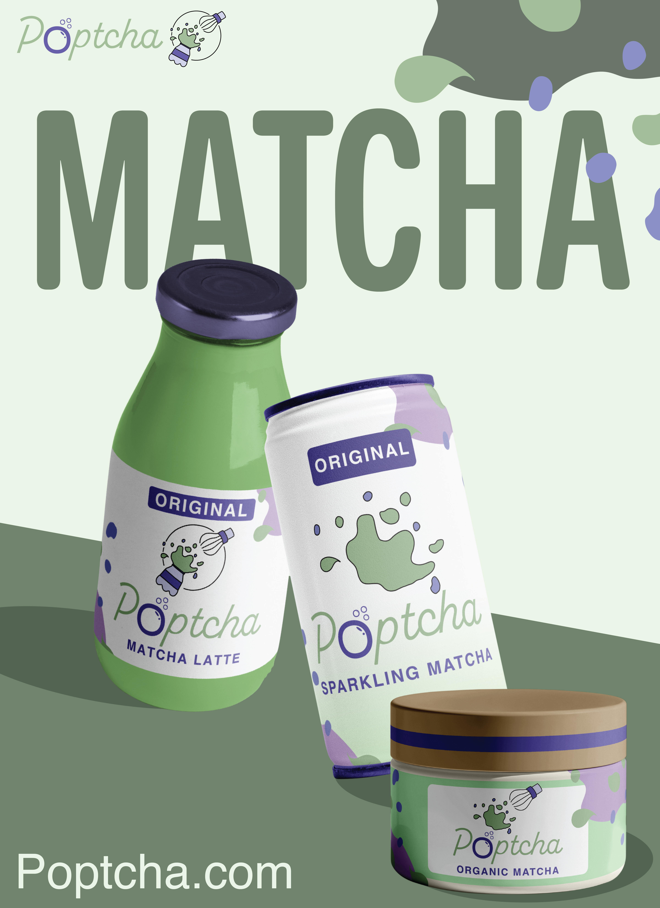
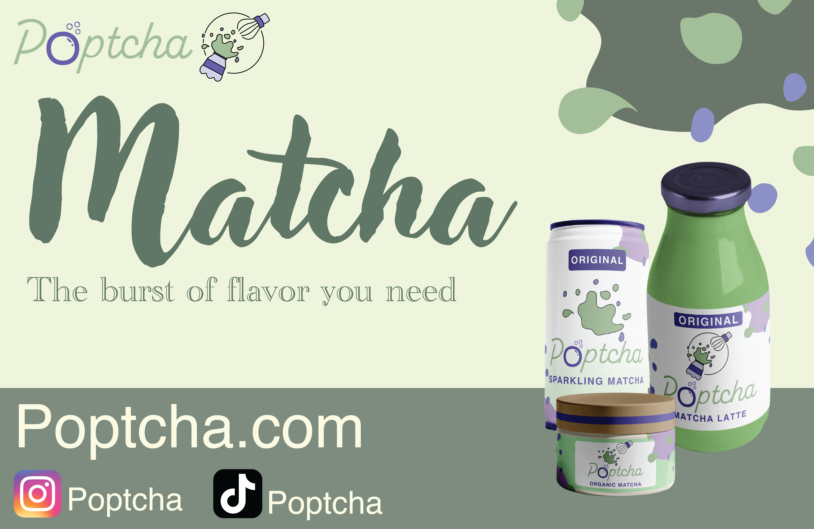

Drafting the Logo
Intitial Sketches
For the logo, I tried sketcing various iterations that represented the brand's name, and ideation of the fun exploding flavors of their matcha products. It was a long run of trial and error, as I bounced around from putting too much and too little detail.

Final Sketch
Eventually, I was able to create a sketch that I thought had a good balance of fun, while still symbolizing matcha. The logo represents a bottle with matcha exploding out of it, with the top drawn as a matcha whisk, sent flying. It signifies a different way of conveying that the matcha is exploding in flavor.
Logo Design
Logo Typography
I wanted to make sure that both the logo name and design were able to stand out on their own, while still looking cohesive together. For the text, I used and edited the font Alkaline, while also changing the 'o' in Poptcha to look like a bubble, symbolizing the 'pop' in the name.
Overall Design
The final design overall has eye catching elements and colors that easily stand out, and portray the brand's ideation of fun flavored matcha products. The logo is also easily adaptable to represent different flavors of the matcha products by changing the secondary colors.
Logo Flexibility & Variations
After creating the logo, I realized that while this logo would look great with a signature bottle packaging, it's important to create different variations of this logo to work with different mediums, and therefore creating a logo system. I decided that this would stay as the main logo design, and create different versions as well.
Avertising the Brand
Poster Design
To advertise the brand, I created an informational poster that can be formatted according to the Matcha product being advertised. This poster can work as both a poster and a social media post. It adheres to the Matcha aesthetic that is trending, while also being informative about the benefits of the product.
I then created two decorative posters that work well either alone or besides the informational poster.



Social Media Post
The social media post displays the main products, website, and social media apps the brand uses. It works well as a visually pleasing social media post and a potential banner for the brand.
